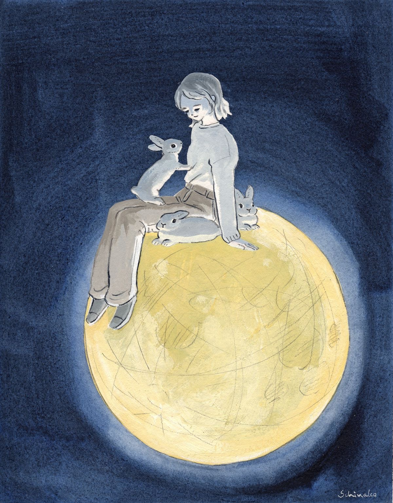

2021년 8월 11일 (수) Miracle of 30 minutes
책 [ 불편한 편의점 ] 읽기
지우쌤 3 ~ 5강 강의 듣기
지우쌤 예제 문제 복습하기
블로그: 생활코딩 WEB 1 완강 후기 업로드하기
대부도에서 칼국수 먹기
윈도우 노트북 업데이트 방법 알아보기
슬기로운 의사생활 9화 넷플릭스 보기
황제손칼국수 + 해물파전

Course of My Life
전날 밤을 설쳐 예정보다 늦게 일어났다. 아침을 먹고 공부를 하려는데 갑자기 부모님께서 대부도에 칼국수 먹으러 가자고 하셨다.
다행히 오늘은 특별한 일정도 없고 할 일도 다녀와서 빡세게 하면 소화할 수 있을 것 같아 대부도로 출발했다. 가서 칼국수를 야무지게 먹고
퇴근시간과 겹치지 않게 바다 한 번 쓰윽 보고 얼른 올라왔다. 집에 와서 공부하다가 운동 갔다와서 라면 아쭈 쬐큼 먹었다.
먹고 슬기로운 의사생활 보고 하루를 마무리했다.
That's enough for now
피곤했지만 공부 미루지 않고 운동도 갔다온 것
Slow & Steady
블로그 글 쓰는 것 다음 날로 미룬 것
전날 밤 설쳤다고 1시간 늦게 일어난 것! 눈 떴으면 빈둥대지 말고 바로 일어나잣!!
짧은 나들이
거리두기 4단게가 된 이후로 대부분의 시간을 집에서 보내고 있다. 가끔 너무 답답할 때만 카페 가서 할 일을 하거나 할 뿐
끼니도 집에서 혹은 배달이나 포장으로 해결하고 있다. 약속도 1번 정도밖에 안나갔고 그마저도 일찍 돌아왔다. 흑흑
4단계가 벌써 6주째 접어들다보니 몸이 비틀릴 것 같다. 부모님도 많이 답답하셨는지 대부도에 가서 바다 한 번 쓰윽 보고 칼국수 먹고 오자고 하셨다.
겸사겸사 드라이브도 하고 말이다. 대부도에서 먹은 칼국수와 해산물은 역시 무척 싱싱했다. 하지만 눈이 휘둥그레해질 정도의 놀라운 맛은 아니었다.
그래도 맛있긴 했다. 며칠 전부터 계속 배가 아프곤 했다. 평소 먹은 양에 비해 더부룩한 불편한 느낌이 들었다.
정적인 생활에 스트레스까지 겹치다보니 그런 듯 하다. 평소 소화능력을 믿고 약을 제때 먹지 않은 내 잘못...
슬기로운 의사생활을 볼 때마다 저런 친구들이 있다는 사실이 부럽고 세상에는 아직 따뜻한 사람들이 많다는 생각을 들게 하면서
묘한 힐링과 감동을 준다. 시즌 2와 같은 주에 시작했던 '보이스4'는 흥미롭고 재미있지만 반대로 인간에 대한 혐오감도 느끼게 한다.
워낙 수위도 쎄고 잔인해서... 그러면서도 범인의 성장배경이 무척 안타깝다. 물론 그게 범죄의 이유는 될 수 없지만 말이다.
암튼 오늘 짧지만 대부도도 갔다오고 할 일도 열심히 했고!! 코로나 시대에 살고 있는 오늘!! 수고했다>.<